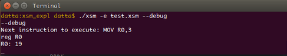
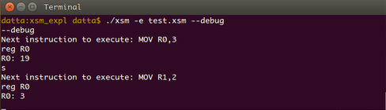
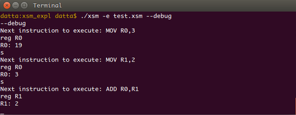
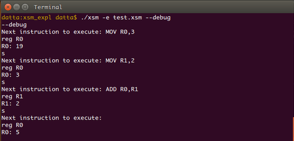
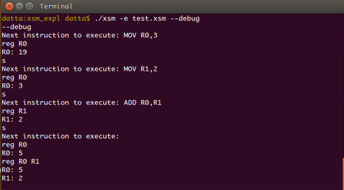
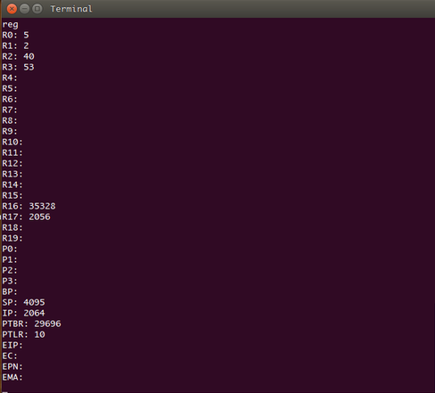
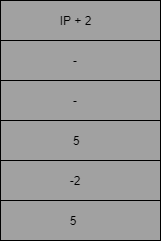
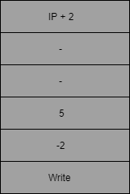

Pre-requisite reading:
- 1. A quick reading of the ExpOS ABI documentation for XSM machine. You may not understand the whole content now. The details will be explained as you read ahead.
Learning Objectives :
- At the end of this tutorial you will be able to generate XEXE executable files containing XSM assembly language programs which can be run on the XSM simulator given to you. Along the way, you will learn how to use the system call interface and the library interface of the underlying Operating system to handle console input and output.
This tutorial helps you to gain a basic understanding of the execution environment provided by the XSM simulator. The compiler you design for the ExpL language is supposed to generate target XSM machine code that runs on the XSM Simulator provided to you. However, the bare machine cannot directly run the target code. The operating system (OS) that runs on top of the machine is the actual software that sets up an execution enviornment necessary for running the target code. Hence, the compiler's obligation is to generate target code that is understandable to the operating system.
Consequently, there must be a document provided by the OS implementation to the compiler designer that explains the interface to the operating system that the compiler must adhere to. This document is called the Application Binary Interface or ABI.
The XSM simulator given to you is actually much more than a bare XSM hardware simulator. It has the capacity to understand the ABI for the ExpOS operating System for the XSM machine. This ABI expects that the compiler generates the target file in a format called the XEXE executable format.
Your compiler simply needs to generate an executable file following the XEXE executable format and store it on the local machine. When you use the XSM simulator to run the program, the following actions take place.
- 1. The script that runs the simulator transfers the file from your local machine's disk to the XSM machine's (simulated) hard disk.
- 2. It then boots up the operating system (the OS is already preloaded in the simulator's hard disk). The bootstrap loader starts in the kernel mode and sets up a user process in memory, allocating an address space. Then, it transfers the executable file from the hard disk to the code region of this memory. Page tables are also set up to run the process in user mode.
- 3. Finally, the simulator sets the instruction pointer (IP) to the address specified in the entry-point field of the header of the executable file and control transfers to this instruction, resulting in execution of the loaded program starting with the instruction specified by the entry point. The machine also switches from the kernel mode to the user mode. (Technically, the OS code pushes the entry point address on to the program's stack and executes the IRET instruction resulting in transfer of control in user mode to the specified memory address. These details are not relevant for your work and are noted just for the sake of information.)
We start now by generating a small XEXE executable file containing an XSM program to find the sum of two numbers and store the value in a register. The value of the register will have to be inspected in order to view the ouput. This is possible by executing the XSM simulator in debug mode. Later we will see how console input and output are handled.
Experiment I : Adding two numbers using registers.
As noted above, executable programs must be designed in such a way that it must be possible for the file to be loaded and executed by the underlying operating system. When a program is loaded into memory by the OS, the OS typically assigns a virtual address space (or simply an address space). In the present case, the address space of a program starts at address 0 of the memory and ends at address 5119. This means that while designing the target program, you may assume that this is the total computer memory accessible to the program.
The compiler typically divides this memory into various regions – namely the code region, (often called the text region), data region, stack region, heap region etc. The ABI specifies the starting address and ending address of each region in the address space. This is specified HERE. The ABI specifies that the compiler must divide the memory into four regions – library, code, stack and heap. (there is no separate data region – instead the stack region must be used for this as well).
For our immediete requirements, the important region is the code region. The code region contains two parts – a header (addresses 2048 to 2055) and code (address 2056-4095). The target code will be loaded into this region of the memory when the OS (simulator) loads the program for execution. Details will be described soon.
The XEXE executable format stipulates that the first 8 words of an executable file must be a header. The rest of the file must contain assembly language program to be executed. The loader actually will simply copy the contents of the executable file into the region of memory between addresses 2048 and 4095. Consequently, the header will be loaded between 2048-2055 and the rest of the file (containing the XSM instructions) into addresses 2056 to 4095. The contents of the file will be copied to the memory in the order in which they appear in the file.
Since each XSM assembly instruction requires two words of memory storage, the first instruction will be loaded into address 2056 and 2057, the second in 2058 and 2059 and so forth. Since the code region of the memory ends at 4095, the maximum number of instructions possible in a program is limited to 1020. This is the limit set by the particular OS platform used in this experiment.
One important field of the header is its second entry – the entry point. The loader initializes the Instruction Pointer (IP) register of the XSM machine to this value. Thus, if entry point is 2064, the simulator the XSM machine simulator will start program execution by fetching the instruction stored at this address. The ABI stipulates that the value of the first field called the magic number must be set to zero. The setting of other fields in the header are not relevant for this experiment.
Note: When the program is actually loaded for execution by the OS, the physical addresses in the actual memory to which the executable program is loaded will be different from the virtual addresses set by the compiler. Such relocation requires architecture support. In the XSM machine, the support is through paging. However address translation is a concern of the OS, not of the compiler. Hence we will not pursue this matter here. However, for those interested, details on XSM paging scheme is given HERE.
With this, we complete the background needed to complete the present experiment. We now proceed to the implementation.
Implementation :
An XSM assembly language program to find the sum of two numbers could work as the following:
1. Store the first number in a register – say R0.
2. Store the second number in a register – say R1.
3. ADD R0, R1.
The result will be stored in R0.
To generate code for the above tasks and write it into a target_file, you must write code as:
fprintf(target_file, "BRKP");
fprintf(target_file, "MOV R0, 3\n");
fprintf(target_file, "MOV R1, 2\n");
fprintf(target_file, "ADD R0, R1\n");
The target_file will look as shown below.
However, the header must be written into the first eight words of the target file before writing out the instructions. You must reserve the first eight words of the executable file for the header before writing code into the file. Now, set the entry point field to the first instruction to be executed. If the code is written immedietely after the header, the first instruction will be loaded to memory address 2056 and 2057 (see memory model). Hence, you must set the header as:
fprintf(target_file, " %d\n %d\n %d\n %d\n %d\n %d\n %d\n %d\n ",0,2056,0,0,0,0,0,0);
The above code essentially sets the first field – magic number - to 0, the second field - entry point - to 2056 and other fields to 0.
Now, to run the executable file, you must use the XSM simulator. The simulator usage commands are specified here. You must read the above link before proceeding further.
The simulator expects a library file by the name library.lib together with the XEXE executable file to be supplied as a command line argument. You will learn more about the library in later in this documentation. For now create a file library.lib with just one instruction in the XSM simulator folder.
Now we will try to execute the target_file in the debug mode.
- 1. Open terminal and navigate to the simulator folder.
- 2. Type "./xsm -l library.lib -e < path to target_file.xsm > --debug".
Note: Path to the xsm file need to be relative path.
Since we are trying to execute the target_file in debug mode, the simulator executes all the instructions present before the BRKP instruction. We will look at the status of register R0 before the execution of instruction "MOV R0, 3".

- Type "s" and then type "reg R0".

- We can see that value 3 is stored in this register. Now try typing "s" and then "reg R1".

- Type "s" and then type "reg R0".

- We can see that value stored in the register is 5.
- Now type reg R0 R1

- The command "reg Rn Rm" dislays the contents of all registers from n to m.
- Now type reg.

This command displays the contents of all the machine registers namely IP, SP, BP, PTBR, PTLR, EIP, EC, EPN, EMA, R0-R19 in that order. We will not be concerned with PTBR, PTLR, EIP, EC, EPN and EMA registers which are accessible only to the OS kernel executing in previliged mode. Note that the value of IP register is 2064. IP was initialized to 2056 while loading (entry point value) and after executing four instructions, IP got incremented to 2064. The OS kernel had set SP to point 4095 at load time (why?).
Note: You would have observed that if you try to continue to execute beyond the last instruction, the simulator flags abnormal program termination. This is because after executing the last instruction of the program, the simulator increments the instruction pointer and tries to execute the next instruction. However, since there is no valid instruction stored in the memory, the simulator will enconter an invalid instruction and generate an exception. This results in transfer of program control to the OS kernel code that will terminate execution and report error. We will see how graceful program termination is achieved in the next experiment.
Exercise 1 : Write an XSM assembly langauge program to find the largest of three numbers and run it on the simulator. You will learn how to handle the JMP instruction while doing this exercise.
Exercise 2 : Modify your code generation module to store the result of the previous program in the first location in stack region namely address 4096 and watch the contents in debug mode after execution.
Experiment II : Input/Output using OS system call interface
Reading Assignment: Read the low level system call interface of the ABI
In this experiment, you will extend the previous stage to print the result of adding two numbers to the console using the low level system call interface provided by the ABI.
The conceptual point to understand here is that console I/O is handled by the kernel routines of the operating system. Kernel modules execute in privileged mode of execution and can execute special privileged instructions that access devices and other resources in a machine.
However, your XEXE executable program execute in unprivileged mode. Such programs are called application programs or simply applications. These programs cannot contain privileged instructions. (If you try to write privileged instruction in your program and execute, the machine will raise an exception when it fetches the instruction and the exception handler module of the OS kernel will terminate the application, flagging an error.) The instructions specified in the ABI given to you are all unprivileged instructions. (To know more about privileged instructions in XSM, see ExPOS documentation).
An OS typically provides you with a set of kernel level routines called system calls which your code can invoke for performing console I/O. A system call is invoked by a trap instruction (The INT instruction is the trap instruction of the XSM machine). Arguments like the system call number specifying the particular OS service (like read/write/program exit) and so on are required. (see details here). The OS specifies how an application must pass arguments and extract return values from system calls called the calling conventions. Generally, arguments to a system call are passed through the application program's stack. These details are written down in the low level system call interface of the ABI.
Note: An OS typically will provide a large number of system calls for various requirements. For our purposes, the relevant system calls are those for console read, console write and program exit.
As noted previously, the arguments/return values to/from a system call are passed through the application program's stack. Each application maintains a stack region in memory where run-time data can be stored while the program executes. The ABI specification stipulates that the stack region of a program shall be between memory addresses 4096 and 5119. The application generally reserves some initial addresses starting from 4096 for storing global variables in the program (called static allocation) and then initializes the stack to the first free memory after those allocated to variables. Arguments to a system call are pushed into the stack before executing the INT instruction. Before the system call transfer control back (using the IRET instruction), return values would have been pushed into the stack.
Implementation :
In Experiment I above, you were asked to calculate the sum of two numbers which are stored
in registers. Now, we will see how this number can be printed out into the console.
To print the data into the console, we need to:
- 1. Push the data(using registers) into the stack along with other arguments to the system call.
- 2. Invoke the write system call using the INT instruction specifying the appropriate interrupt number.
To use the stack we need to set the stack pointer(SP). Always SP should
point the top value of the stack. The XSM machine increments SP immedietely before a PUSH operation
by XSM machine and hence the first PUSH operation will be storing
data to address 4096. So, we need to initialize SP to 4095.
MOV SP, 4095
Now, the arguments to a write operation must be pushed on to the stack:
Note that the contents which are to be written to the console are present in the register R0.
So, we are not using the register R0.
System Call Number : 5 for Write
MOV R2, 5
PUSH R2
Argument 1 : value -2
MOV R2, -2
PUSH R2
Argument 2 : Data to be written (For this example, data is present in R0. So, we are pushing R0)
PUSH R0
Note : Whenever there is a blank argument or a space to be pushed on to the stack, we follow the convention of pushing R0 on to the stack and the status of stack in the figure will be shown using blank argument only.
Argument 3 : Blank /* Push any register */
PUSH R0
Storage for Return Value : Push any register
PUSH R0
Now, invoke the trap instruction to invoke the kernel module for console output. The ABI specifies that the interrupt number must be 7.
Interrupt Number : 7 for Write System Call
INT 7
The status of the stack after the INT instruction will look as shown below

Note that in the above diagram argument 2 is 5 because the contents of the register R0 is 5.
The above sequence of instructions will invoke the write system call. Upon successful write operation, the value 0 will be returned to the calling program through the stack. We assume here that the call will be successful.
Now upon exit from the system call :
- 1. The return value may be retrievied if required.
- 2. The stack must be set back to the state before the call as stipulated in the ABI. This is necessary to avoid loss of stack space after each call.
The following instructions will do the above.
// The following code must be executed after return from the system call
POP R0 // Pop and save the return value in some register
POP R1 // Pop and discard the argument3
POP R1 // Pop and discard the argument2
POP R1 // Pop and discard the argument1
POP R1 // Pop out system call number.
The target_file will look as shown below after adding the Write system call.
Now, having generated the executable program run the program using the simulator. To run the program, follow the instructions given below.
- 1. open terminal and navigate to the XSM simulator folder.
- 2. Type "./xsm -e < relative path to target_file.xsm> "
You can see that the value 5 is printed on the console.
Observe that the simulator flagged an error after the last statement was executed. This happened because after executing the last valid instruction in the program, the simulator had no idea that the program had ended and hence tried to fetch the next instruction from memory. However, since there is no valid insturction in that memory location, the machine raises an exception [see here for exceptions of XSM] and control was transfered to an exception handler routine of the OS kernel. Typically, in a multitasking environment, the OS will terminate the program, reclaim resources allocated to it and schedule some other process.
The exception handler routine of the XSM simulator given to you is designed to print an error message and terminate the simulation.
The "proper" way to exit the application is to invoke the exit system call. This will inform the OS that the program has finished execution. The exit system call code of a typical OS kernel will "gracefully" exit the application and schedule other programs for execution. The OS will never return to the application that invokes the exit system call.
The exit system call routine of the XSM simulator given to you will print a message indicating successful program execution and terminate the simulation.
Important Note : The system call code for read, write and exit will modify some of the registers R0, R1 etc.
Hence, if you had stored some value into these registers before the call, those values will be lost during the call.
Hence, if you wish to restore the values of the registers, the following procedure must be adopted.
- 1. Push all registers in current use into the stack. For example, if you wish to retain values of
R0, R1 and R2 after the call, push these three registers into the stack.
- 2. Now, follow procedure outlined earlier to make the system call.
- 3. After return POP out the registers saved in the stack. (Note that you must pop the registers out in reverse order of push).
Exercise 3 : Follow the instructions in the low level system call interface of the ABI to invoke the exit system call after the console output in your previous program.
So far, there was no need to allocate memory for storing variables as all the data involved were stored in registers. The next
exercise requires allocation of storage for variables. Suppose you want to read a number from the console, then the address of
a memory location must be passed as the second argument to the read system call (INT 6). The system call will place the input data into
the memory address received as the second argument.
Suppose you need three variables to be read, then you may reserve the first three words of the stack (memory addresses
4096, 4097 and 4098) for those variables. As some portion of the stack is now reserved for variables,
the initial value of the stack pointer
may be set such that the run time stack begins above the reserved region. (SP may be set to 4098 here).
This ensures that the reserved region is not over-written when the program
pushes data into the stack. To read a variable from input, you need to push the address of the
memory location reserved for the variable as
the second argument (4096 for the first, 4097 for the second, 4098 for the third.)
and invoke the read system call. With this strategy, the following exercise can be easily solved.
Exercise 4 : Write an XSM assembly language program to read three numbers from the console and print the largest. (Invoke the read system call for console input.) Caution : Ensure that you understand the important note written above before starting with the implementation.
Exercise 5 : Write an XSM assembly language program to read numbers until a zero is entered and print their sum.
Important Note : Exercises 4 and 5 essentially ask you to handle conditional and iterative constructs in assembly language. These exercises give insight into how machine code must be genrated for if-then-else and while-do constructs of programming languages.
Experiment III : Understanding the Library Interface
Prerequisite Reading : Read and understand the library interface.
In this experiment, you will learn how to implement the library interface stipulated in the ABI for supporting read, write and exit system calls.
The memory address space model of a program reserves the first 1024 words of the address space of a program to load a library. Here we explain the purpose of the library.
If we consider C programs, almost every program uses the routines in the library stdio.h. Since in a computer system, several application programs will be running concurrently, it is a good idea to have the code for stdio.h loaded once at bootstrap time into some region of the physical memory and link this memory to the address space of each program's standard library region at load time. This code will be designed once and shared between all applications.
The ABI specifies that the ExpOS library for the XSM machine must be linked to address 0 to 1023. The XSM simulator given to you will load the contents of the file library.lib to the addresses 0 - 1023 of your program. The ABI stipulates that the library must support functions for read, write and exit. (The library also must contain functions Alloc, Free and Initialize which will not be discussed here.)
To access any library function, an application must transfer control to the code at memory address 0 using the instruction CALL. This is the first memory address in the library region. The arguments to the call specify which library function is being invoked. The library interface is specified here.
An application program can execute read, write and exit functions through the library. This means that once the library is implemented, application programs can call the library (CALL 0) to perform read, write and exit operations by passing appropriate function code and arguments. Internally, the library contains code that traps to the Os kernel.
One might naturally raise the question – why should we route the system calls through the library than call them directly as was done so far. There are several advantages in using the library. At a later time, if the interrupt number for an OS service – say write – gets modified, only the library needs to be replaced. The compiler need not be modified, nor application programs need re-compilation. Thus, the library provides an abstraction that hides low level details from the compiler and the application.
Implementation :
In this experiment, we implement the program of Experiment II using the library.
Recall that to print the data into the console, we need to:
- 1. Push the data(using registers) into the stack along with other arguments to the system call.
- 2. Invoke the write system call using the INT instruction specifying the appropriate interrupt number.
The step 1 will remain same as in the above experiment. We will implement step 2 using library interface.
To use the stack we need to set the stack pointer(SP). Always SP should
point the top value of the stack. The XSM machine increments SP immedietely before a PUSH operation
by XSM machine and hence the first PUSH operation will be storing
data to address 4096. So, we need to initialize SP to 4095.
MOV SP, 4095
Now, the arguments to a write operation must be pushed on to the stack:
Note that the contents which are to be written to the console are present in the register R0.
So, we are not using the register R0.
Function Code : "Write"
MOV R2, "Write"
PUSH R2
Argument 1 : value -2 (see ABI for specification)
MOV R2, -2
PUSH R2
Argument 2 : Data to be written (For this example, data is present in R0. So, we are pushing R0)
PUSH R0
Argument 3 : Blank /* Push any register */
PUSH R0
Storage for Return Value : Push any register
PUSH R0
The main difference between the system call interface and the library interface come at the next instruction. If we were using the system call interface, we would have called the interrupt for write (INT 7). Here instead, we will always use CALL 0 to transfer control to the library. (Remember that library file is loaded in the memory addresses 0 - 1023.). The library understands that the action requested is a write operation by looking at the function code passed as argument (in this case "Write"). If the action requested is a read operation, then "Read" is passed, and so on.
CALL 0
The status of the stack after the INT instruction will look as shown below

Note that in the above diagram argument 2 is 5 because the contents of the register R0 is 5.
The above sequence of instructions will invoke the write system call from the library. Upon successful write operation, the library must retuen value 0 to the calling program through the stack. We assume here that the call will be successful.
Now upon exit from the call :
- 1. The return value may be retrieved if required.
- 2. The stack must be set back to the state before the call as stipulated in the ABI. This is necessary to avoid loss of stack space after each call.
The following instructions will do the above.
// The following code must be executed after return from the system call
POP R0 // Pop and save the return value in some register
POP R1 // Pop and discard the argument3
POP R1 // Pop and discard the argument2
POP R1 // Pop and discard the argument1
POP R1 // Pop out the function code.
The target_file will look as shown below after adding the Write system call.
Now we need to write logic in the library file to handle the request for Write system call. Earlier we have created the "library.lib" file with RET instruction alone. Now we will edit this file.
When CALL 0 is executed, the IP+2 is pushed on the top of the stack and IP is set to 0. Therefore now IP points to the first instruction of the library file.
Since every call to the library points IP to 0 address, we need to have logic to distinguish the type of request at this address. The information regarding the type of request can be found from the function code that is pushed as an argument on the stack. The function code can be obtained from the stack using SP - 5[Why?].
In this experiment we are dealing only with "Write" system call, so we will have our discussion only specific to it. After recognising the type of request we need to handle the request in the same way as we did in the previous experiment using system call interface. The arguments to be passed in the system call interface are system call number(5),-2, register holding the value to be written (It is at SP - 3) and a blank argument. The library simply has to copy the arguments 1 to 3 to the system call without any modification.
Get the function code from the stack and compare if it is equal to "Write" and get the arguments from the stack.
MOV R1, SP
MOV R2, 5
SUB R1, R2
MOV R2, "Write"
MOV R1, [R1]
EQ R1, R2
JZ R1, 62
MOV R1, SP
MOV R2, 4
SUB R1, R2
MOV R2, [R1] //argument 1 at SP - 4
ADD R1, 1
MOV R3, [R1] //argument 2 at SP - 3
ADD R1, 1
MOV R4, [R1] //argument 3 at SP - 2
Once you get the arguments, the procedure to invoke the system call is same as we did in the earlier experiment.
/* pushing arguments and space for return value for system call */
MOV R5, 5 //System call number 5 for Write
PUSH R5
PUSH R2 //R2 contains [SP - 4] = -2
PUSH R3 //R3 contains [SP - 3] = 5 // Contains Value
PUSH R4 //R4 contains [SP - 2] = blank
PUSH R5 // space for return value
/* trap instruction */
INT 7
/* Pop the arguments and return value */
POP R1 //Pop and save return value
POP R2 //Pop and discard
POP R2 //Pop and discard
POP R2 //Pop and discard
POP R2 //Pop and discard
The return value of the library is the same as the return value of the system call. Hence the library must copy the return value of the system call back to the application as its own return value through the stack.
/* Storing the return value on the top of the stack */
MOV R2, SP
MOV R3, 1
SUB R2, R3
MOV [R2], R1
// [SP - 1] = R1 (Return value was popped to R1 earlier)
RET
The library.lib file will look as shown below after adding the code to handle Write system call.
Important Note : Your library code for read, write and exit may modify some of the registers R0, R1 etc.
Hence, if you had stored some values into these registers before the call, those values will be lost while the
library code is executed. To safely restore the values of the registers, the following procedure must be adopted.
- 1. Push all registers in current use into the stack. For example, if you wish to retain values of
R0, R1 and R2 after the call, push these three registers into the stack.
- 2. Now, code the library call and return steps.
- 3. After return POP out the registers saved in the stack. (Note that you must pop the registers out in reverse order of push).
Exercise 6 : Implement read() and exit() functions of the library.
Exercise 7 : Modify the program to read three numbers from the console and print the largest to perform I/O using the library interface.
Exercise 8 : Modify the program to read numbers until a zero is entered from the console and print their sum to perform I/O using the library interface.